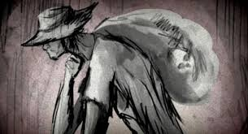
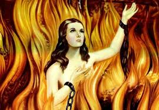
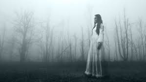
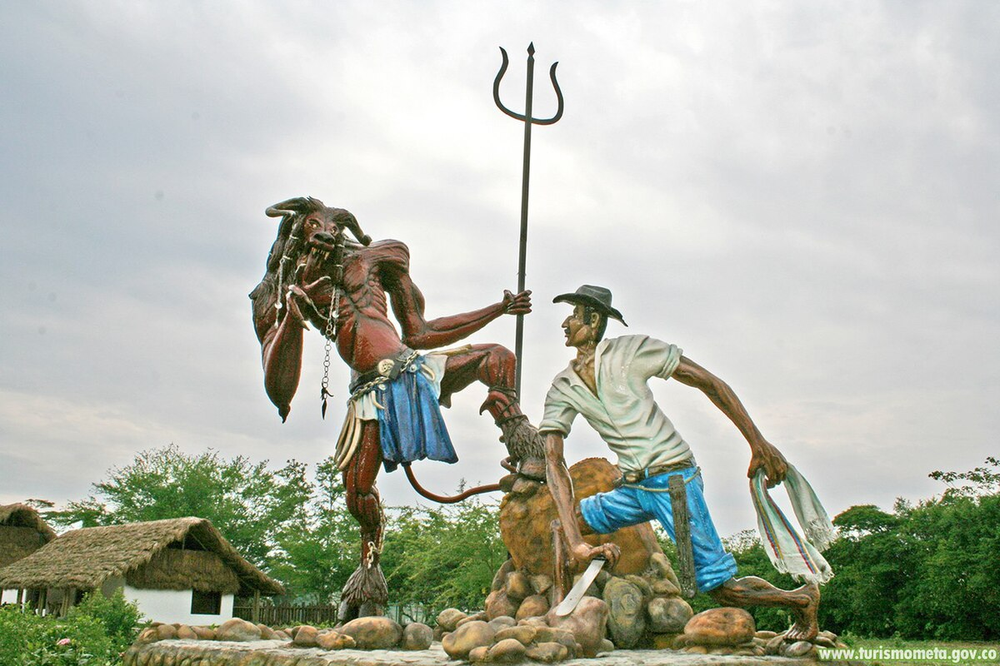
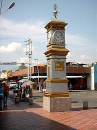
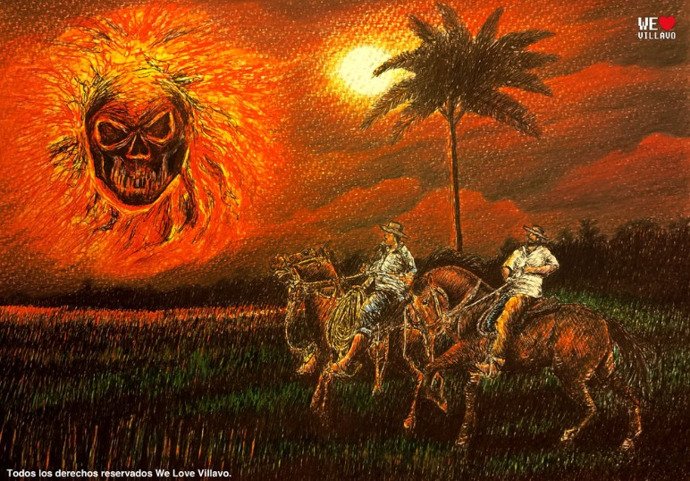

Leyendas Urbanas &
Mitos de Venezuela

La leyenda del Silbón es una de las más aterradoras de los Llanos venezolanos. Se dice que es el espíritu de un joven que mató a su padre y es condenado a vagar cargando los huesos de su víctima en un costal. Anuncia su presencia con un silbido agudo que se acerca y se aleja; quien lo escucha cerca, en realidad está lejos, y si se escucha lejano, es porque está a punto de aparecer. Su aparición presagia muerte y desgracia.
Se dice que si escuchas el silbido cerca, estás a salvo; pero si lo oyes lejano... es porque viene hacia ti. Los campesinos aún cuelgan cruces de iguana en las puertas y rezan el credo al revés para espantarlo.

La leyenda cuenta que el Ánima Sola se manifiesta como una mujer atractiva cuya misión es cobrar las deudas de aquellos que piden favores a las Ánimas Benditas y olvidan encender las velas prometidas en pago. En el sector Las Flores del Ingenio, en Guatire, una mujer devota olvidó cumplir con su promesa. Esa noche, recibió la visita de una supuesta amiga a la que dejó pasar; sin embargo, una vez dentro, la figura se transformó en una sombra oscura y aterradora que la arrastró por el cabello, dejándole graves moretones..
Aparece en las encrucijadas como advertencia de arrepentimiento eterno, buscando almas que recen por su descanso.

En Venezuela, La Llorona también clama por sus hijos perdidos. Se le aparece como una mujer vestida de blanco que llaga las noches con su llanto desconsolado: "¡Ay, mis hijos!". Se dice que ahogó a sus pequeños por despecho y ahora vaga cerca de ríos y quebradas. Su aparición anuncia muerte o desgracias familiares, y su llanto helado es un presagio terrible.
Los viajeros nocturnos cuentan que su lamento se escucha desde lejos, pero cuando parece estar cerca, en realidad está lejana.

La Sayona es un espectro femenino de belleza fatal que castiga a los hombres infieles. Se presenta como una mujer hermosa con un vestido blanco o rojo, pero su rostro oculta una calavera o una sonrisa macabra. Aparece en caminos solitarios para seducir a los hombres casados y luego los devora o enloquece. Simboliza la venganza y la lealtad conyugal ultrajada.
Se le reconoce porque suele preguntar: "¿Qué le voy a hacer, si mi mamá me lo mandó?", y de repente muestra su rostro deformado.

Narra el famoso contrapunteo entre el coplero Florentino y el mismo Diablo en una noche de luna llena. El demonio retó al hombre con cantos de desafío para ganar su alma, pero Florentino, con su sabiduría llanera y versos alusivos a Dios, logró vencer al maligno. Simboliza el triunfo del bien y el folclore llanero frente a las fuerzas oscuras. Se celebra en los velorios de cruz de mayo.
El duelo de versos duró toda la noche hasta que el Diablo, derrotado, huyó entre llamaradas.

Leyenda urbana de la ciudad de Caracas. Se habla de un reloj antiguo que pertenecía a un misterioso personaje llamado Guigue. Quien escucha sus campanadas a altas horas de la noche, queda atrapado en un eterno bucle temporal o es víctima de maldiciones. Algunos dicen que anuncia la muerte de alguien o que el reloj es un portal hacia el pasado. Su tictac es sinónimo de fatalidad.
Los más viejos del centro de Caracas juran haber escuchado las campanadas a las 3 de la mañana, hora en que el reloj marca el destino.

También conocida como "Bola Candente" o "Bola de Lumbre", es una manifestación espectral que rueda por los campos y montañas. Muchos aseguran que es el alma en pena de un cura o un brujo que murió sin confesión. Aparece como una esfera ígnea que persigue a los viajeros, y si toca a alguien, le provoca maleficios. En zonas rurales aún hay testimonios de estos fuegos fatuos malignos.
Los campesinos dicen que si la bola te persigue, debes trazar una cruz en el suelo o rezar para que se desvanezca.

El Carretón es un carro fantasma que se escucha en noches de luna llena arrastrando cadenas por caminos empedrados. Se dice que es un castigo para un hombre cruel que atropelló a su propia familia, y ahora su carreta está condenada a vagar eternamente. Quien escucha el crujir de sus ruedas y los gritos debe encerrarse, pues mirarlo causa locura o muerte súbita.
Los viajeros nocturnos cuentan que el ruido de las cadenas se acerca lentamente, pero nunca se debe mirar hacia atrás.